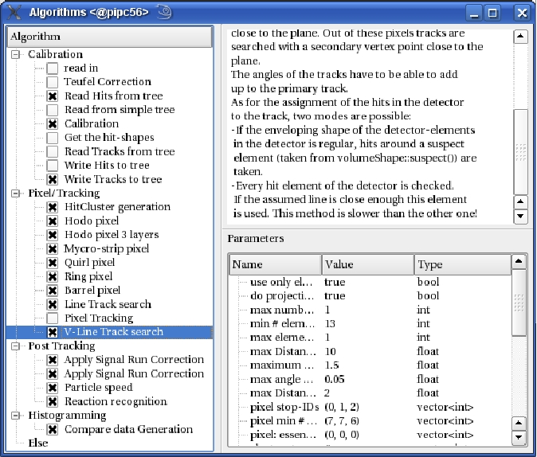

This work is licensed under a cc by-nc-sa 3.0 Unported License unless marked otherwise.
|
The AlgorithmWidget displays all of your currently defined algorithms, selected and unselected. It consists of two parts, a QTreeWidget on the left, that lists all defined algorithms by name; the items are checkable to select the algorithms for analysis. The right part of the widget is covered by an AlgorithmDisplay that shows the properties of the current algorithm in the list. Due to historic reasons the algorithms are sorted in categories, like "calibration", "tracking", "histogramming". |  |
|
This work is licensed under a cc by-nc-sa 3.0 Unported License unless marked otherwise. |